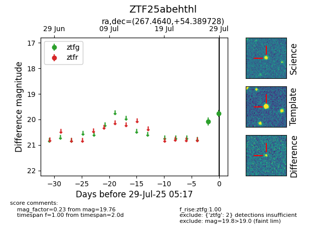

Target ZTF25abehthl at 2025-07-29 05:17, see:
FINK: fink-portal.org/ZTF25abehthl
Lasair: lasair-ztf.lsst.ac.uk/objects/ZTF25abehthl
ALeRCE: alerce.online/object/ZTF25abehthl
alt names
ZTF25abehthl (ztf,fink)
coordinates:
equatorial (ra, dec) = (267.4640,+54.38973)
galactic (l, b) = (82.2498,+30.54986)
photometry
last ztfg=19.76
2 ztfg detections
